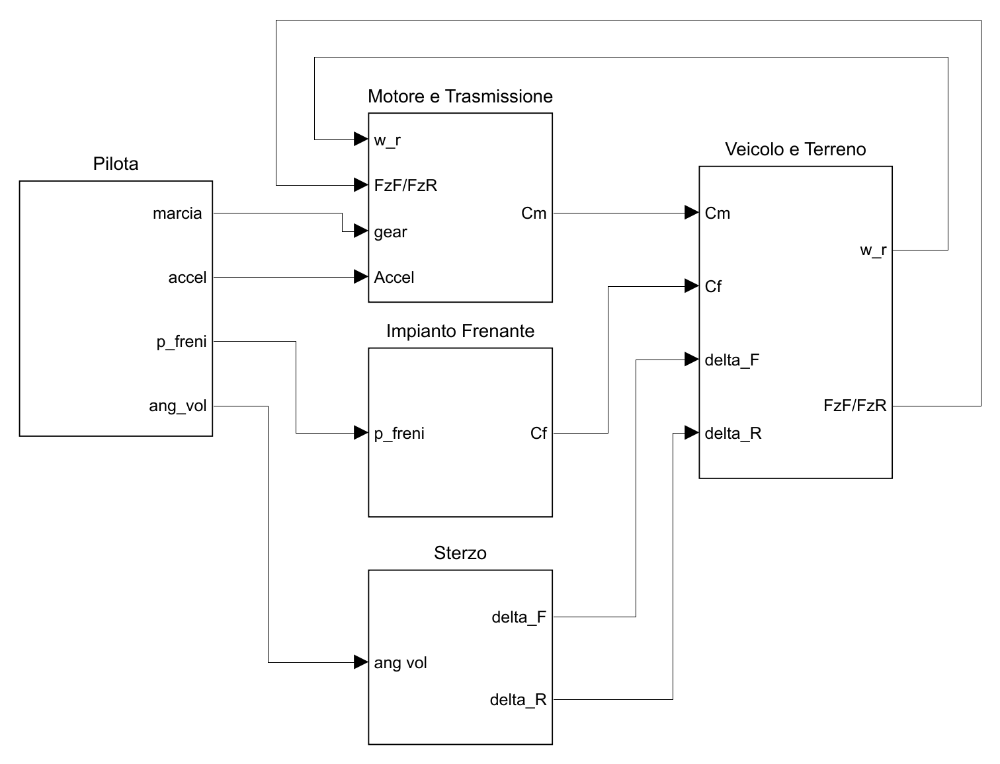
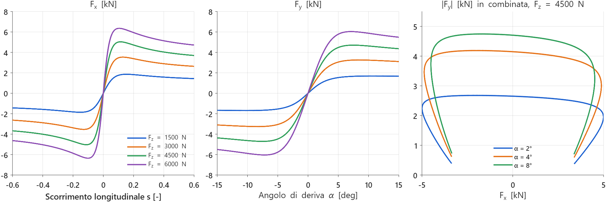
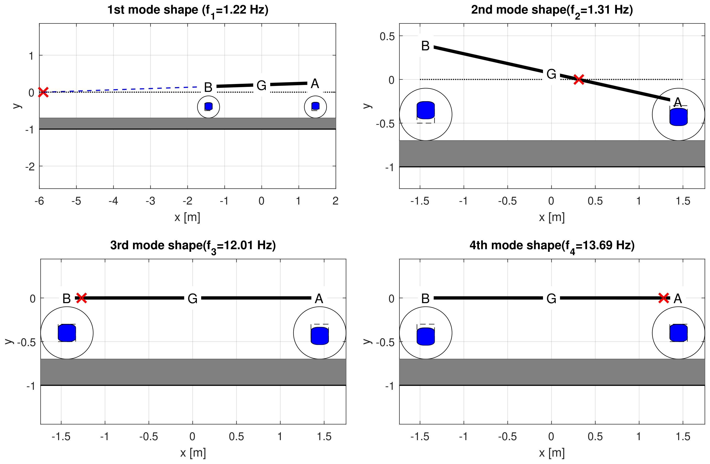
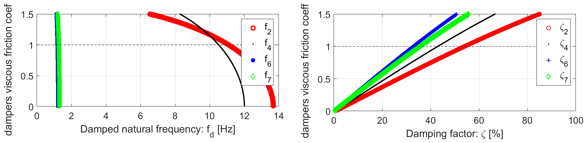

Full vehicle: cornering, roll and differential
The most complete model describes the car with yaw, sideslip and body roll, four wheels with Pacejka tyres and load transfers, an engine with gearbox, a limited-slip differential, the braking system and the steering. The driver controls steering wheel, throttle, brake and gear, and the model can be run on standard manoeuvres: step steer, ramp steer, sweep, steering pad and a launch on a surface with different grip on the two sides.
I used the model to compare different configurations; the plots on this page come from the simulations.

Understeer: driveline layout and anti-roll bars
A ramp steer at 100 km/h gives the understeer characteristic: how much steering-wheel angle is needed, beyond the purely geometric one, for each level of lateral acceleration. In the linear range the curves coincide; towards the limit, rear-wheel drive understeers less and reaches about 1 g, while front-wheel and all-wheel drive saturate the front axle first. Shifting roll stiffness to the front anti-roll bar loads the outer front wheels more and increases understeer.

Step steer response
At 100 km/h with a step steer, the yaw rate peaks 25% above its steady-state value and oscillates a few times before settling. The sideslip angle follows the same pattern, while the roll angle quickly reaches about 4°, well damped by the suspension.

Differential on a split-friction surface
Starting in second gear at 30 km/h with the right wheels on a slippery surface (μ = 0.3) and the steering wheel held still, the car accelerates at full throttle. With an open differential, torque is limited by the slipping wheel and the car goes almost straight. With a limited-slip differential, torque goes to the wheel that has grip: acceleration is better, but the difference in thrust between the two sides makes the car yaw, and without driver corrections it deviates by about 40 m over 300.

Bicycle model
The linear two-degree-of-freedom model, sideslip and yaw, is the basis for understanding cornering stability. The axle cornering stiffnesses are derived from the static load on each wheel by interpolating the tyre curve. I wrote the model in state space and computed steady-state gains, poles, frequencies and damping ratios as the speed varies.
Moving the centre of gravity by 10 cm changes the behaviour: moved forward, the vehicle becomes understeering and the yaw gain drops with speed; moved back, it becomes oversteering, the gain grows and the vehicle would become unstable above a critical speed, here about 410 km/h.

Tyre: Pacejka model
The 225/50 R17 tyre is described with the Pacejka '96 Magic Formula. In the Simulink model, slip ratio, slip angle, vertical load and grip are imposed, and the longitudinal force, lateral force and self-aligning moment are obtained. The curves show the force peak at around 10% slip and 7° slip angle, the drop in relative grip as the load increases and, in combined slip, how braking or accelerating reduces the available lateral force.

Braking and electronic brake-force distribution (EBD)
The longitudinal dynamics model simulates braking from 100 km/h with three strategies: a fixed torque split between the axles, a brake proportioning valve, and EBD, a PID controller that regulates the rear torque to keep the slip of the rear wheels just below that of the front ones. The goal is to stay close to the ideal braking parabola and never lock the rear wheels first, which would make the car unstable.
Comparing two fixed splits shows why regulation is needed. Under braking, load shifts to the front: with a 50:50 split the rear axle gets too much torque, the points move away from the parabola and the rear wheels reach 11% slip, close to locking. With 70:30 braking follows the parabola, but only for that deceleration and that load: the proportioning valve and EBD are there to adapt the split to real conditions.

Ride comfort: four-degree-of-freedom model
For ride comfort the vehicle is a planar model with body bounce and pitch and the vertical displacement of the two wheels. The modal analysis gives two body modes at around 1.2–1.3 Hz and two wheel modes between 12 and 14 Hz. Varying the damper coefficient from 1% to 150% of its nominal value shows that the wheel modes are the most sensitive, while the body frequencies change little. The model then computes the frequency responses and the response to a random road profile described by its power spectral density.


Before this model I built the one- and two-degree-of-freedom quarter-car models in Simulink, the starting point for understanding the effect of spring, damper and tyre.
What I learned
This coursework gave me a method for studying a vehicle: start from the simplest model that answers the question and add complexity only when needed — the bicycle model for stability, the full vehicle for behaviour at the limit, the four-degree-of-freedom model for comfort. Above all I learned to read the results with the physics in mind, to understand why a design choice changes how the car behaves.